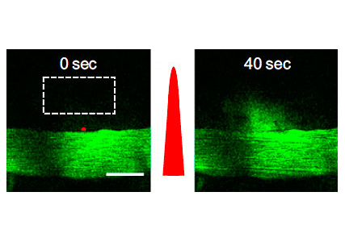
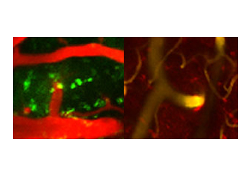
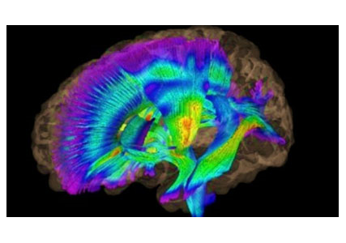

연구성과 10선
연구성과 10선
KAIST RESEARCH ACHIEVEMENTS
신개념 뇌-신경 약물전달기술 개발
바이오및뇌공학과 최철희
요약
최철희 교수 연구팀은 빛을 이용해 혈액 속에 존재하는 약물을 뇌로 안전하게 전달할 수 있는 기술을 세계 최초로 개발했다. 이는 극초단파 레이저를 1,000,000분의 1초 정도 매우 짧은 시간 동안 혈관벽에 쬐어줌으로써 혈관에는 손상을 주지 않으면서 혈액 속에 있던 고분자 약물을 뇌로 안전하게 전달할 수 있는 원천기술이다.
연구내용
감기나 소화불량이 생겼을 때 우리는 약을 먹는다. 그렇다면 뇌에 질병이 생겼을 때는 어떨까? 뇌에 약물을 전달하는 것은 생각만큼 쉽지 않다. 이는 혈뇌장벽이라는 특수한 구조가 존재하기 때문이다. 혈뇌장벽은 생각과 감정을 담고 조절하는 특수 기관인 뇌를 보호하기 위해 스스로 갖추고 있는 특수한 구조이다. 정상인 상태에서는 방어를 해주는 고마운 구조이지만, 질병이 생겼을 때에는 약물 전달을 어렵게 만드는 양날의 검과 같은 존재다. 때문에 많은 과학자와 의학자들은 뇌의 질병을 치료하는 데 있어 정상적인 기능을 보존하면서도 약물을 투과할 수 있게 만드는 기술을 찾기 위해 무수한 노력을 기울여 왔다. 현재까지 뇌에 약물을 전달하기 위해 사용되는 방법으론 두개골에 구멍을 내서 직접 주사를 하거나 약물의특성을 변형시켜 투여하는 등 위험하고 어려운 것이 대부분이다. 이러한 방법들은 환자를 힘들게 하고 비용이 많이 든다는 단점을 가지고 있으며,약물 전달 효율성 등에 있어서도 개선해야 할 점이 많았다.
의미와 전망
그림 1. 최철희 교수 연구팀은 레이저를 이용하여
혈액 속의 약물을 뇌로 안전하게 전달하는 방법을 개발했다.
뇌와 혈관을 가르는 막에 아주 짧은 시간 동안 자극을 주어 보통 때는
뇌 속으로 이동할 수 없는 고분자 물질이 뇌로 들어갈 수 있게 한다.
초극단파 펄스 레이저로 혈뇌장벽 열어
 그림 2. 결정의 내부 구조가 3.5나노미터의 거대기공

그림 3. (왼쪽)빛 자극에 의해 뇌로 전달된
아데노 바이러스에 의해 발현된 녹색형광
의미와 전망
2011년 최철희 교수 연구팀은 빛을 이용해 뇌로 약물을 전달하는 신개념 약물 전달 기술을 개발하는 데 성공했다. 극초단파 펄스 레이저를 이용해 혈뇌장벽을 짧은 시간 동안 열어서 뇌의 원하는 부위에 약물을 전달할 수 있도록 한 것이다. 연구팀은 출력이 일정한 일반적인 레이저(Continuous wave laser)가 아니라 펄스 형태로 짧은 시간 동안 높은 에너지를 출력할 수 있는 펄스 레이저를 사용했다. 특히 연구팀이 사용한 극초단파 펄스 레이저는 100 펨토초(10의13제곱분의 1초)라는 짧은 펄스 하나의 지속시간 동안 매우 높은 에너지를 출력하는 것이다.

순간적으로 높은 에너지를 출력하는 극초단파는 원래 라식 수술이나 금속 공정과 같은 물질에 열 혹은 물리적인 변화를 가하는 데 이용되던 것이다. 이중 낮은 에너지 범위의 극초단파 펄스 레이저는 수 마이크로 제곱미터(10의 12제곱분의 1제곱미터)이하에만 국소적으로 에너지를 전달할 수 있어 주위 생체조직에 피해를 주지 않기 때문에 최근 생체영상 촬영에 널리 이용되고 있다. 연구팀은 극초단파 펄스 레이저가 생체영상 촬영에 이용되는 에너지보다 높은 에너지에서 생체 기능을 조절할 수 있는 것을 발견했다. 극초단파 펄스 레이저를 이용해 마이크로초(백만 분의 1초)동안 세포를 자극하면 세포에서 여러 가지 기능을 담당하는 물질인 칼슘의 농도를 조절할 수 있는 것이다. 레이저를 통해 혈관을 감싸던 혈뇌장벽을 자극하면 칼슘이 증가하면서 순간적으로 수축이 일어나 혈관 주위 막이 사라지며 혈관으로부터 약물을 전달할 수 있게 된다. 연구팀은 레이저 자극을 통해 열린 혈뇌장벽이 수 분이 지난 후에 다시 원상태로 회복이 되는 것을 확인했다. 이는 레이저 자극이 혈뇌장벽을 완전히 파괴하는 것이 아니라 짧은 시간 동안만 변형을 일으킨다는 의미로, 기존의 해로운 물질을 차단하면서 뇌를 보호하는 기능이 파괴되지 않은 채 약물을 전달할 수 있는 가능성을 증명한 것이다.
연구비 지원
ㆍ교육과학기술부 21세기프론티어 뇌기능활용 및 뇌질환 치료기술개발사업
관련문헌
ㆍProceedings of the National Academy of Sciences USA (5-Year Impact Factor=10.3) 2011.05.16